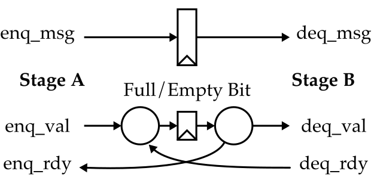
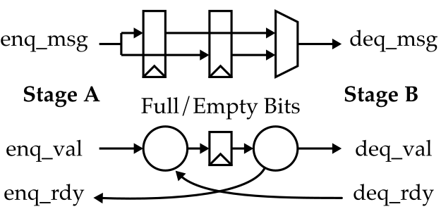
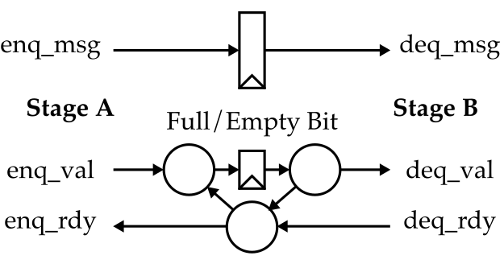
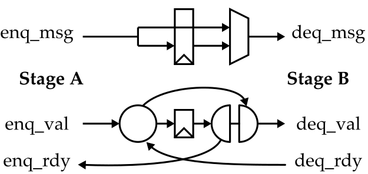

# ECE 4750 Section 8: Memory Random Testing and Queues
Table of Contents
- Directed Testing
- Random Testing for Reads
- Random Testing for Reads and Writes
- Queues
In this discussion section, we will work together to develop a
random testing methology for memory systems before spending some
time discussing three different kinds of queues. You should log
into the ecelinux servers using the remote access
option of your choice and then source the setup script.
% source setup-ece4750.sh
% cd $HOME/ece4750/2025F
% git pull
% cd sections/section8
% TOPDIR=$PWD
% mkdir $TOPDIR/buildDirected Testing
In last week’s discussion section, we implemented the write
init transaction in a very basic direct-mapped cache. As always,
we will be using a test-driven design strategy, so it is important
for us to begin thinking about how we will test our cache
implementions right from the beginning. Last week we saw a very
basic directed test for the write init transaction in
lab3_mem/test/simple_test.py:
msgs = [
# type opq addr len data type opq test len data
req( 'in', 0x0, 0x1000, 0, 0xdeadbeef ), resp( 'in', 0x0, 0, 0, 0 ),
]Our directed tests will specify the memory request messages along with the expected memory response messages. Let’s run this directed test on the FL model:
% cd $TOPDIR/build
% pytest ../lab3_mem/test/simple_test.py -sVerify that you can see the stream source sending memory requests to cache which then forwards those requests to main memory. Also verify that you can see the corresponding response coming back from main memory to the cache which then forwards this response back to the stream sink.
Write a new directed test that first uses the write init transaction to initialize a word, and then uses a read transaction to read that same word. Verify that this directed test case passes on the cache FL model.
Random Testing for Reads
As we know, directed testing is important for verifying known corner cases, but random testing can help discover unknown corner cases. We have provided you a basic random testing strategy for testing memory read requests.
def data_1KB():
data = []
for i in range(256):
data.extend([0x00001000+i*4,0xabcd1000+i*4])
return data
def random_msgs():
# Create list of 100 random request messages with the corresponding
# correct response message.
msgs = []
for i in range(100):
# Choose a random index to read
idx = randint(0,256)
# Create address and data. Notice how we turn the random index into
# an actual address. We multiply the index by four and then add it to
# the base address which is 0x00001000. We can figure out the correct
# data from the address.
addr = 0x00001000+idx*4
data = 0xabcd1000+idx*4
# Create a request/response pair.
msgs.extend([
req( 'rd', i, addr, 0, 0 ), resp( 'rd', i, 0, 0, data ),
])
return msgsNotice how we need to define two functions. The first function will be used to initialize the main memory, while the second function is used to generate the memory requests and expected memory responses. We can specify these functions along with memory stall probability, memory latency, and src/sink delays in a test case table similar in spirit to what we have used in previous labs.
test_case_table = mk_test_case_table([
( "msg_func mem_data_func stall lat src sink"),
[ "random", random_msgs, data_1KB, 0.0, 0, 0, 0 ],
[ "random_delays", random_msgs, data_1KB, 0.9, 3, 10, 10 ],
])
@pytest.mark.parametrize( **test_case_table )
def test( test_params, cmdline_opts ):
run_test( CacheFL(), test_params, cmdline_opts, cmp_wo_test_field )You can find the definition of run_test in
harness.py. The cmp_wo_test_field is a
function that is used to compare the actual response message to
the expected response message. It enables us to ignore the test
field when running on the FL model since the FL model always
indicates that memory transactions miss in the cache.
Let’s run this directed test on the FL model:
% cd $TOPDIR/build
% pytest ../lab3_mem/test/simple_random_test.py -sVerify using the line trace that the test case is producing reads to random addresses.
Random Testing for Reads and Writes
Now let’s explore how to extend our random testing strategy to
include a mixture of both reads and writes. Modify the
random_msgs function so that there is a 50% chance
that every message is a read and a 50% chance every message is a
write. Rerun this random test. We will discuss in the discussion
section how to ensure that such a random test works as
expected.
Queues
There are three kinds of queues:
- Normal Queues : no combinational path from enq to deq, nor from deq to enq
- Pipe Queues : combinational path from deq rdy to enq rdy
- Bypass Queues : combinational path from enq val to deq val
Here are the high-level diagrams for each kind of queue.
Normal Queue (Single Element)

Normal Queue (Two Element)

Pipe Queue (Single Element)

Bypass Queue (Single Element)

We will discuss these queues in the discussion section and also experiment with RTL implementations of these queues:
% cd $TOPDIR/build
% pytest ../sec08_queues/test/NormalQueue1_test.py -s
% pytest ../sec08_queues/test/NormalQueue2_test.py -s
% pytest ../sec08_queues/test/PipeQueue1_test.py -s
% pytest ../sec08_queues/test/BypassQueue1_test.py -s